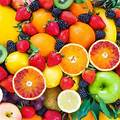

Health Benefits
- Heart Health:Fruits like berries and citrus lower blood pressure andrisk of heart dissease.
- Weight Management:Low in caloriesand high in fiber to keep you full.
- Digestive Health:Promotes digestion and prevents constipation.
Types of Fruits

Stone Fruits:Great for digestion(e.g., peaches, cherries).

Tips for Including Fruits in Your Diet
1. Add fruits to smoothies or oatmeal for a nutritious start to your day.
2. keep a variety of fresh fruits on hand for snacks.
3.Choose seasonal fruits for peak flavor and nutrition.